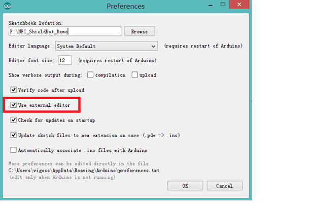
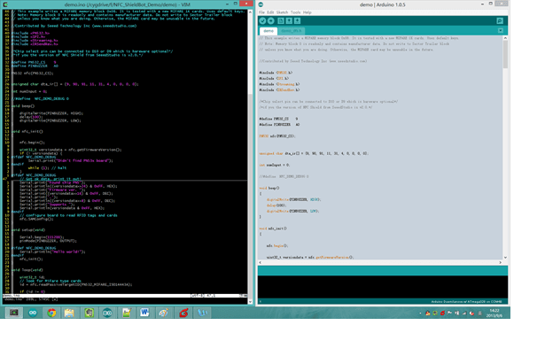

Some guy this Arduino IDE’s editing interface is no so friendly, non-standard indentation, no syntax highlighting, no Autocomplete and so on. In short, if you’ve used other excellent editor such as emacs, vim, even notepad++, you must be very unhappy about Arduino’s editing interface.
But, you can use an external editor, open Arduino IDE, click File -> Preferences, choose Use external editor:

Then you find you can’t type in Arduino IDE, you can only use external editor now.
The following is my favorite editor: Vim, is it more beautiful than Arduino IDE?
